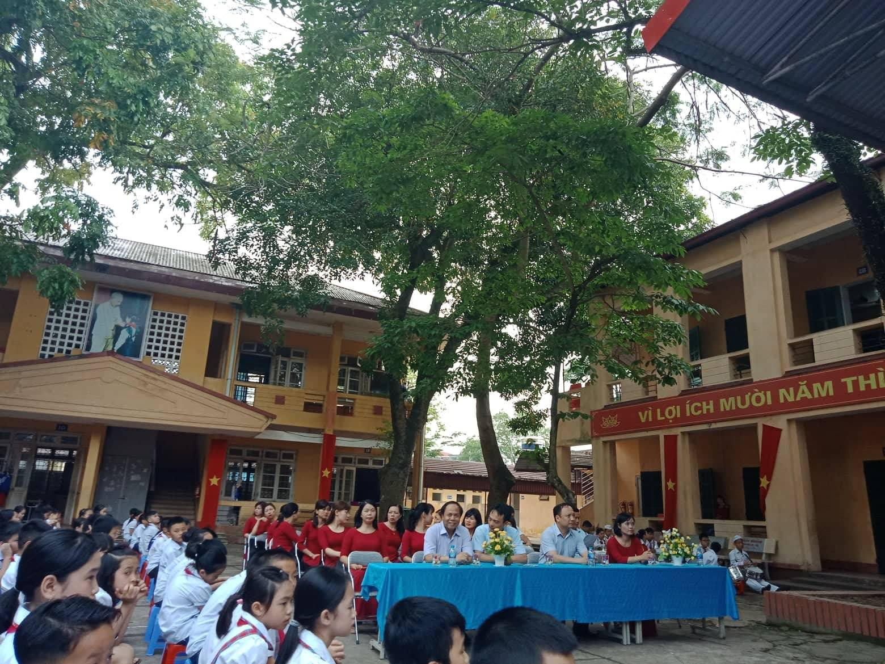
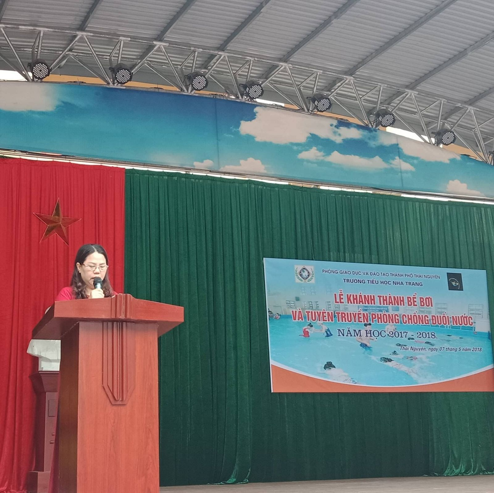
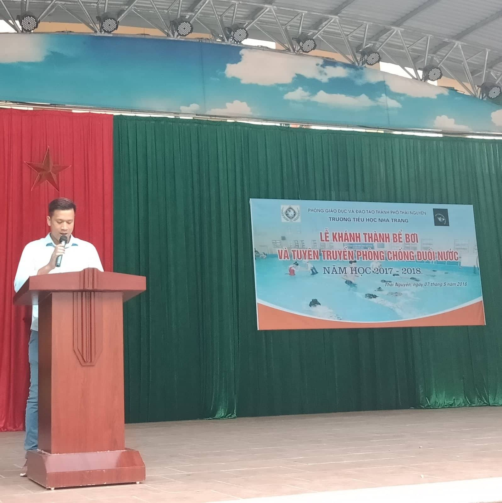
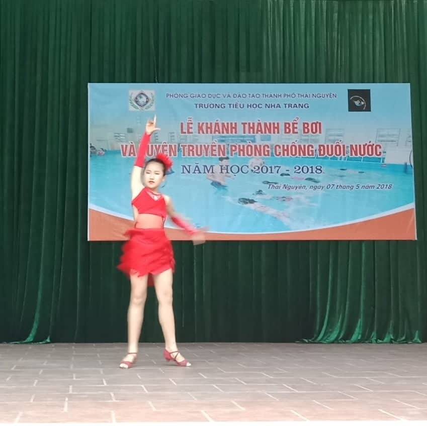
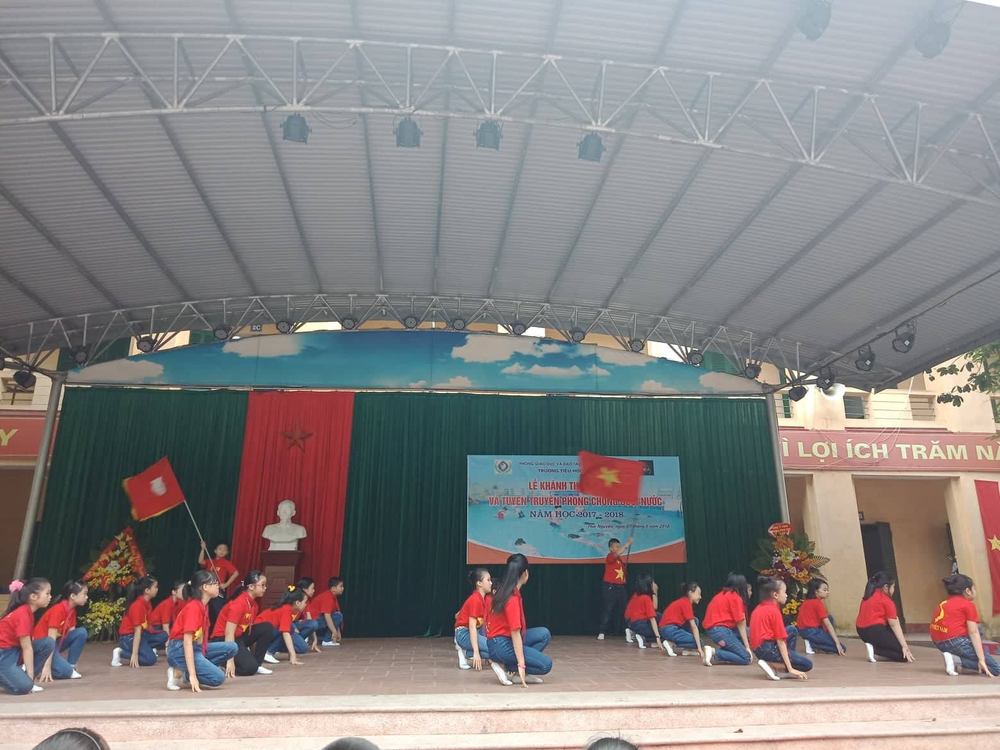
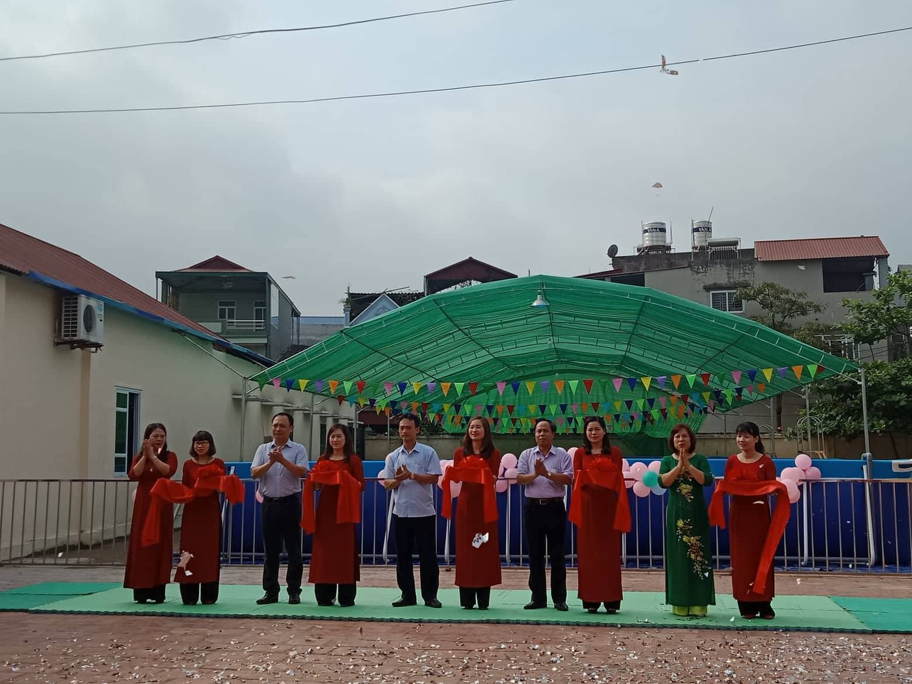
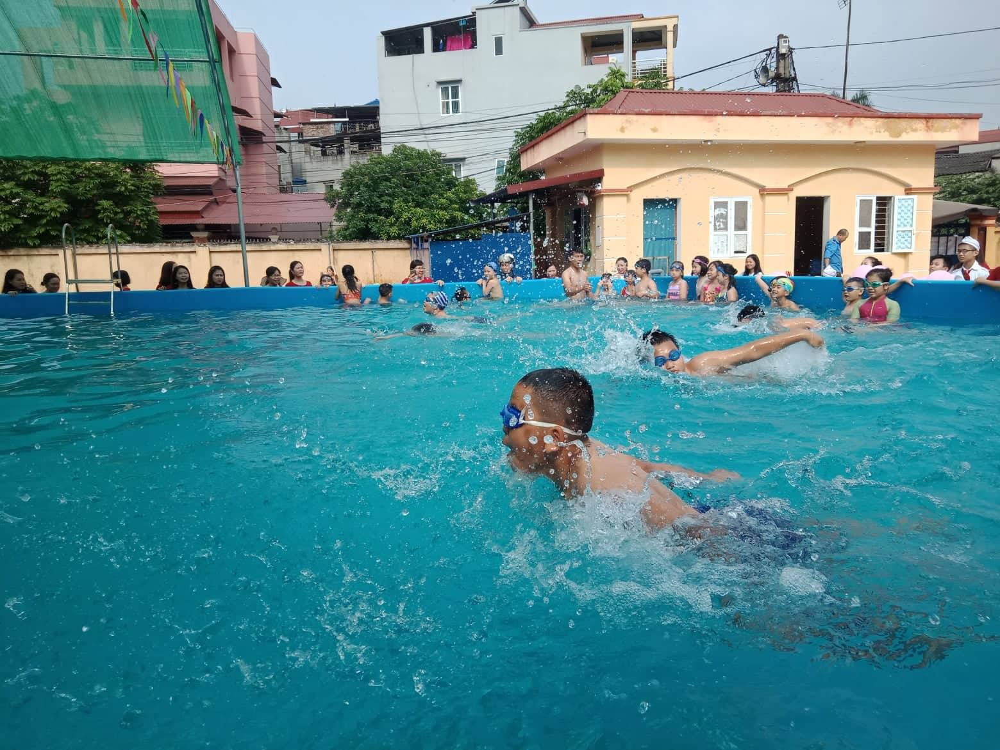

LỄ Khánh thành bể bơi và tuyên truyền phòng chống đuối nước cho học sinh trường tiểu học Nha Trang năm học 2017-2018.
Lễ Khánh thành bể bơi và tuyên truyền phòng chống đuối nước cho học sinh trường tiểu học Nha Trang năm học 2017-2018.
Ở Việt Nam, đuối nước là nguyên nhân tử vong do tai nạn thương tích đứng thứ hai đối với mọi lứa tuổi (chỉ sau tai nạn giao thông). Bộ Lao động – Thương binh và Xã hội nhận định, nước ta có tỷ lệ trẻ tử vong vì đuối nước cao gấp 8-10 lần các nước phát triển. Vào mùa hè, mùa mưa lũ, tai nạn đuối nước có chiều hướng tăng mạnh.
Với mục đích giảm thiểu tai nạn do đuối nước cho thiếu nhi; Thiết thực chào mừng ngày thành lập Đội TNTP Hồ chí Minh 15/5 và kỉ niệm 128 năm ngày sinh nhật Bác Hồ kính yêu; Ngày 07/5/2018 được sự nhất trí của phòng Giáo dục và Đào tạo thành phố Thái Nguyên, trường tiểu học Nha Trang phối hợp với Công ty Trách nhiệm hữu hạn Đầu tư và Phát triển Thể thao Thái Nguyên long trọng tổ chức buổi lễ khánh thành bể bơi và tuyên truyền phòng chống đuối nước cho học sinh trường tiểu học Nha Trang năm 2018.
Về dự buổi lễ có ông Trần Đức Thành - Trưởng phòng Công tác Chính trị Tư tưởng Sở GD&ĐT tỉnh Thái Nguyên; Ông Nguyễn Đức Ninh- Chuyên viên sở GD&ĐT tỉnh Thái Nguyên. Ông Đào Quang Nghĩa - Chuyên viên phòng GD&ĐT TP Thái Nguyên. Ông Nguyễn Văn Biên - Đại biểu Công ty TNHH Đầu tư và Phát triển Thể thao Thái Nguyên; Ngoài ra còn có sự có mặt của các ông, bà trong Ban đại diện Cha mẹ học sinh của nhà trường và sự có mặt đông đủ của các thầy, cô giáo các em học sinh trường tiểu học Nha Trang.
Mở đầu chương trình sau Nghi lễ đón đại biểu là tiết mục nhảy zumba của em Phan Hà My đến từ lớp 4A. Tiếp theo là Nghi lễ chào cờ, tuyên bố lí do, giới thiệu đại biểu, phát biểu khai mạc của đồng chí Hiệu trưởng – Phạm Thị Bích.
Tại buổi lễ, 100% các em thiếu nhi đã được tuyên truyền về nguyên nhân và cách phòng tránh đuối nước và lợi ích của việc bơi lội. Bơi lội không chỉ giúp bảo vệ sự an toàn cho chính bản thân của trẻ, mà còn giúp trẻ tự tin vận động, phát triển kỹ năng sống, phát triển thể chất và giải tỏa căng thẳng sau những giờ học.
Công trình bể bơi cho trẻ em là một trong những chương trình có ý nghĩa thiết thực tạo sự lan tỏa lớn trong tổ chức và các tầng lớp nhân dân góp phần tạo cho trẻ em được vui chơi, rèn luyện về thể chất cũng như học tập văn hoá.
Kết thúc buổi lễ, các lãnh đạo cùng cắt băng khánh thành khai trương bể bơi dành cho thiếu nhi và màn trình diễn bơi của thiếu nhi trường TH Nha Trang lớp học bơi dưới sự hướng dẫn của giáo viên thể dục của nhà trường và các huấn luyện viên của câu lạc bộ bơi.
Chương trình thực sự đã tạo được sức hút đối với học sinh và tạo cơ hội cho học sinh trong trường được học bơi theo chương trình phòng chống đuối nước của Bộ Giáo dục và Đào tạo góp phần rèn luyện sức khỏe phục vụ tốt hơn cho việc học tập và đời sống của các em. Việc khánh thành bể bơi vào dịp hè càng có ý nghĩa và cần thiết nhằm phục vụ tốt nhu cầu vui chơi, giải trí, rèn luyện sức khoẻ cho các em. Qua đó trang bị kỹ năng bơi và chống đuối nước cho học sinh, đào tạo, bồi dưỡng các tài năng trong lĩnh vực bơi góp phần nâng cao hiệu quả thực hiện phong trào thi đua “Xây dựng trường học thân thiện, học sinh tích cực”.
Một số hình ảnh của chương trình.
Đoàn đại biểu về dự lễ khánh thành bể bơi trường tiểu học Nha Trang

Đại biểu của sở GD Và DT, Phòng GD và DT về dự lễ khánh thành bể bơi trường TH Nha Trang

Đ/C Phạm Thị Bích bí thư chi bộ hiệu trưởng nhà trường phát biểu

Huấn luyện viên Đoàn Thanh Tuấn tuyên truyền chống đuối nước

Tiết mục văn nghệ Dance sport của em Trà Mi

Tiết mục dân vũ Tiến lên Việt Nan ơi của các em khối 4

Các vị đại biểu cắt băng khánh thành bể bơi trường TH Nha trang

Màn Trình diễn bơi của các em học sinh